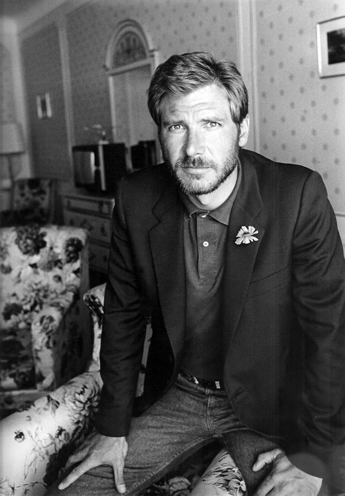
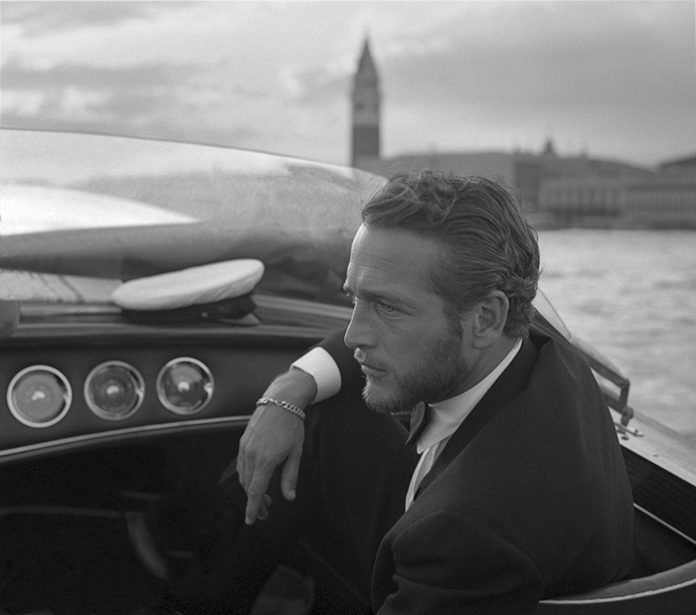
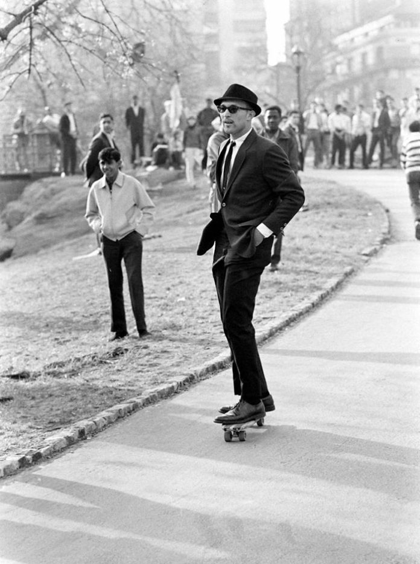
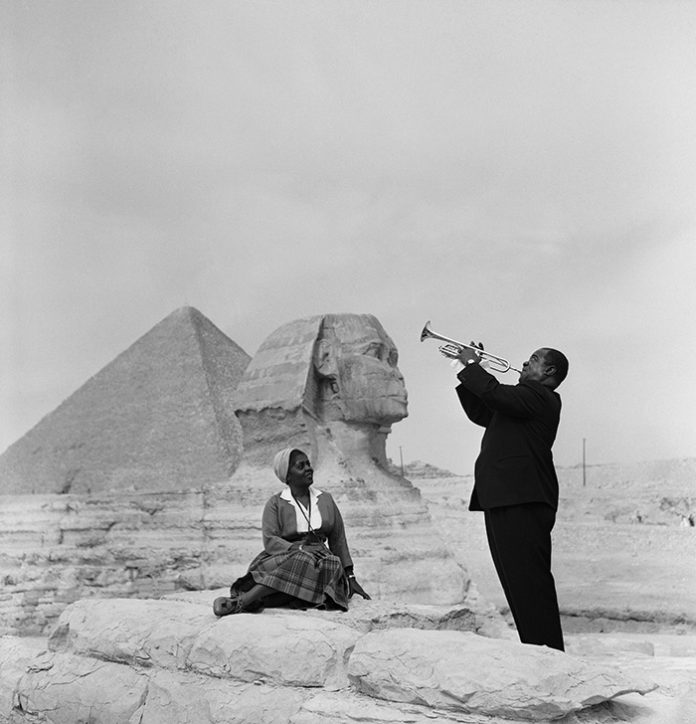
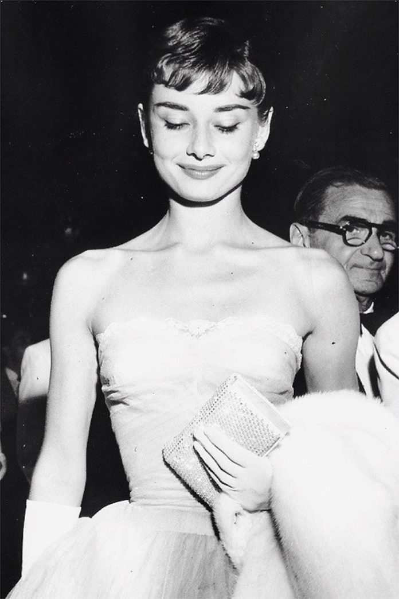
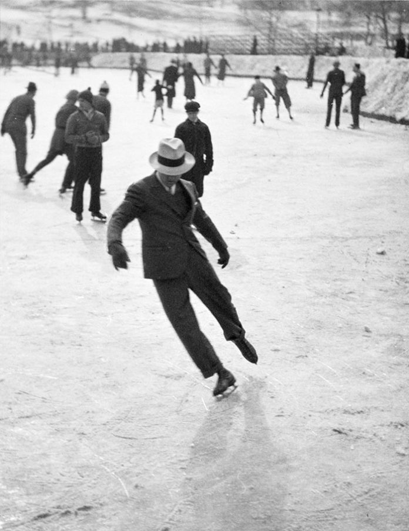
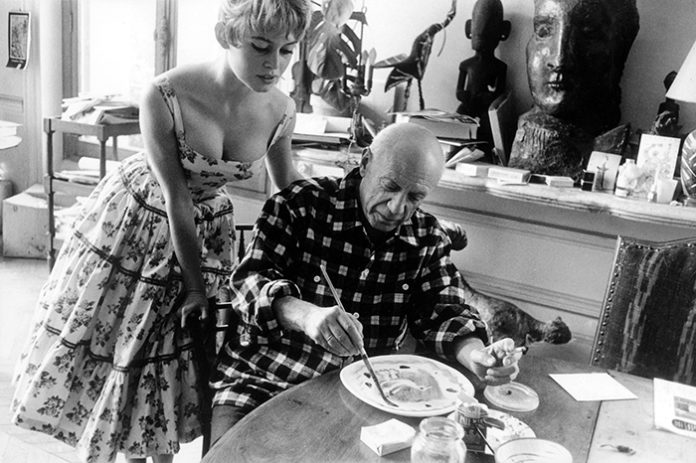
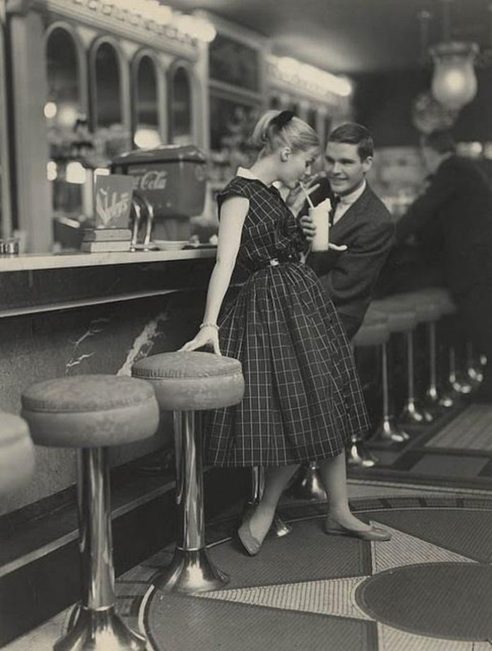

იაპონიაზე გამარჯვების დღე თაიმზ სქვერში. ფოტო გადაღებულია ალფრედ აიზენშტატის მიერ ნიუ-იორკის თაიმზ სქვერში 1945 წლის 14 აგვისტოს, როცა ოფიციალურად გამოცხადდა მეორე მსოფლიო ომის დასასრული. შემდგომში ამ ფოტომ ჟურნალ “ლაიფის” (LIFE) გარეკანი დაამშვენა. მეზღვაურისა და ექთანის ვინაობა საიდუმლოდ დარჩა, თუმცა სხვადასხვა დროს რამდენიმე ვარიანტი წამოჭრილა. მიუხედავად იმისა, რომ ბევრის აზრით, სურათზე რომანტიკული კოცნაა, სინამდვილეში ეს ორი ადამიანი ერთმანეთისთვის უცნობები იყვნენ. ფოტოგრაფის თქმით, მეზღვაური იმ არეალში ყველა ქალს კოცნიდა.
განდი სართავ ჯარასთან. ეს ფოტო განდის მკვლელობიდან რამდენიმე საათით ადრეა გადაღებული. განდი ზის სართავ ჯარასთან, რომელსაც იყენებდა თავისთვის ტანსაცმლის მოსაქსოვად. ჟურნალ “ლაიფის” (LIFE) პირველი ქალი ფოტოგრაფი – მარგარეტ ბორკ უაითი – 1946 წელს ჩავიდა ინდოეთში სიტუაციის შესაფასებლად. მარგარეტს განდისთვის სურათის გადაღების უფლება არ მისცეს, სანამ ერთი უცნაური სურვილი არ აუსრულა მის მდივნებს – თავად ისწავლა ჯარას ხმარება. 1948 წელს ორი წარუმატებელი ცდის შემდეგ მესამედ მოახერხა ფოტოაპარატისთვის იმპულსური ნათების დარეგულირება და ფოტოც მზად იყო.
აინშტაინის დაბადების დღე. ფოტო გადაღებულია 1951 წლის 14 მარტს, ალბერტ აინშტაინის 72-ე დაბადების დღეზე. ფოტოგრაფმა არტურ სასმა გააფრთხილა მეცნიერი, რომ გაღიმებულიყო, მაგრამ გამომდინარე იქიდან, რომ ეს უკვე ბევრჯერ გაეკეთებინა, გენიოსმა გადაწყვიტა, გახუმრებოდა და ენა გამოუყო. მალევე ეს ფოტო იქცა აინშტაინის ყველაზე პოპულარულ ფოტოდ. 2009 წლის 19 ივნისს სურათი აუქციონზე $74,324-ად გაიყიდა.
ნაპალმით შეტევა ტრანგ ბანგზე. 1972 წლის 8 ივნისს ნიკ უტის გადაღებულ ფოტოზე 9 წლის კიმ ფუკი გარბის, როცა სამხრეთ ვიეტნამზე ნაპალმით მიდის შეტევა. გადაღების მომენტში კიმი შიშველია და ზურგზე სერიოზული დამწვრობა აქვს მიღებული. გოგონა ამჟამად კანადაში ცხოვრობს და ხელმძღვანელობს ორგანიზაციას, რომელიც ომის ახალგაზრდა მსხვერპლებს ეხმარება.
ლანჩის დრო ცათამბჯენზე. შავ-თეთრი ფოტო, რომელზეც 11 მუშა როკფელერის ცენტრში, ნიუ-იორკის ცათამბჯენის 69-ე სართულის დირეზე ზის და ლანჩს მიირთმევს. ფოტო გადაღებულია 1932 წლის 29 სექტემბერს, მშენებლობის ბოლო თვეში. 2 ოქტომბერს დაიბეჭდა ყოველდღიურ გაზეთში “New York Herald Tribune”. ფოტოგრაფის, ჩარლზ ებეტსის აღიარება მხოლოდ 2003 წელს მოხდა, მანამდე კი ფოტოს ავტორი უცნობად რჩებოდა.
ქირურგის ფოტო. წლების განმავლობაში ბევრ ადამიანს სჯეროდა, რომ ლოხ-ნესის ეს ფოტო რეალური იყო. ის პირველ და ერთადერთ ხელმოსაჭიდ ნივთს წარმოადგენდა შოტლანდიური მონსტრის არსებობასთან დაკავშირებით, რადგან თავი და კისერი მოჩანდა. ავტორი გახლდათ რობერტ ვილსონი და 1934 წლის 21 აპრილს “დეილი მეილშიც” დაიბეჭდა. თუმცა 1994 წელს გამოვლინდა მისი სიყალბე – ეს იყო პლასტმასის ფიგურა, მიბმული სათამაშო წყალქვეშა ნავზე.
მსოფლიოს უკანასკნელი კომერციული გემი, რომელსაც აფრები ჰქონდა, 1949 წელი
ოსვენციმის საკონცენტრაციო ბანაკი
კათოლიკე ქალისა და პროტესტანტი კაცის საფლავი, ჰოლანდია, 1888 წელი
ადამიანი-მაიმუნი ბრაზილიის ჯუნგლებიდან. 1937 წელი
მართვის სკოლა. 1953 წელი.
ოპიუმის საღამო. 1918 წელი.
20 საინტერესო ფაქტი
1)ასწლიანი ომი (ომი საფრანგეთის მმართველობისათვის) სინამდვილეში 116 წელი გრძელდებოდა 1337-1453 წლებში. სწორედ ამ ომში ჩაუდგა სათავეში საფრანგეთის ჯარებს ჟანა დარკი და რამოდენიმე მნიშვნელოვანი გამარჯვება მოიპოვა.
2)1752 წელს დიდ ბრიტანეთში და მის კოლონიებში მხოლოდ 354 დღე იყო. ეს მოხდა იმიტომ, რომ ბრიტანეთი გადავიდა იულიანური კალენდრიდან გრეგორიანულზე და ამის შედეგად დაიკარგა დღეები 3 სექტემბრიდან 13 სექტემბრამდე.
3)1309-1378 წლებში რომის პაპის რეზიდენცია რომში კი არა საფრანგეთის ქალაქ ავინიონში იყო. ამ წლებსი პაპები იქ თავს უფრო დაცულად გრძნობდნენ, ვიდრე აღელვებულ რომში. 1378 წელს პაპმა გრეგორი XI დააბრუნა რეზიდენცია რომში და ამით დაასრულა ე.წ პაპების ავინიონში ტყვეობა.
4)აშშ-ში სამოქალაქო ომის შემდეგ ბრუნვაში არსებული ქაღალდის ფულის 33-50% ყალბი იყო.
5)1938 წელს ჟურნალმა TIME ადოლფ ჰიტლერი წლის ადამიანად გამოაცხადა. ამ წელს ჰიტლერმა მიიღო ჯარების სრული კონტროლის უფლება, განაცხადა, რომ ჩეხოსლოვაკიის განადგურება უნდოდა, აიყვანა ავსტრია კონტროლის ქვეშ და გერმანიიდან 12000 ებრაელი გამოაძევა.
6)1685 წელს ბანქოს ქაღალდები საფრანგეთში ფულის როლს არულებდა მონეტების ნაკლებობის გამო.
7)პირველი კონტრაცეპტივები ძველ ეგვიპტეში გამოიგონეს.
8)მოკავშირეთა ჯარების მიერ ბერლინშ ჩამოგდებულმა პირველმა ჭურვმა მხოლოდ ბერლინის ზოოპარკში მცხოვრები სპილო მოკლა.
9)ინგლისელი მწერალი ჯონ ობრი წერს ერთი საინტერესო ფაქტის შესახებ. როდესაც ოქსფორდის გრაფი დედოფალ ელიზავეტა -ს ესალმებოდა მან შემთხვევით გააკუა, შერცხვენილი გრაფი ქვეყნიდან 7 წლით გაემგზავრა. როდესაც ის დაბრუნდა დედოფალი მას შემდეგი სიტყვებით შეხვდა "მე უკვე დიდი ხანია დამავიწყდა ის კუილი".
10) 74 წლს რომის იმპერატორმა ვესპასიანემ სამოქალაქო ომში გახარჯა ხაზინის თითქმის მთელი თანხა. ფულის შესაგროვებლად მან შექმნა პირველი ფასიანი საზოგადოებრივი ტუალეტები. მან განაცხადა "ფულს სუნი არ აქვს".
11) ლიბერიის პირველი სამოქალაქო ომის დროს გენერალი ჯოშუა მილტონ ბლაჰი თავის ჯარს სრულიად შიშველი მიუძღვებოდა. ის თვლიდა რომ ეს ხერხი მას ტყვიებისგან დაიცავდა. სავარაუდოდ ხერხმა გაამართლა, რადგნა ბლაჰი დღესაც ცოცხალია.
12)ყინსტონ ჩერჩილი დღეში მინიმუმ 15 სიგარეტს ეწეოდა.
13) 1838 წელს მექსიკის პრეზიდენტმა ანტონიო ლოპეს დე სანტა-ანამ დაკარგა ფეხი გასროლის შედეგად. მან გასცა ბრძანება ფეხი დაესაფლავებინათ ყველა სამხედრო წესის დაცვით.
14) ჰოლანდიელმა მოგზაურმა აბელ ტასმანმა თავისი პირველი მოგზაურობისას აღმოაჩინა ტასმანია, ახალი ზელანდია და ფიჯი, მაგრამ მატერიკი ავსტრალია ვერ შეამჩნია.
15)როდესაც ამერიკის სამოქალაქო ომი დაიწყო კონფედერაციის ჯარების მთავარსარდალ რობერტ ედვარდ ლის არ ჰყავდა მონები, რასაც ვერ ვიტყვით ჩრდილოელების მთავარსარდალ ულის გრანტზე.
16)გერმანიის იმპერატორი ვილჰელმ II, რუსეთის იმპერატორი ნიკოლაი II და ბრიტანეთის მეფე გეორგ V, ბრიტანეთის დედოფლის ვიქტორიას შვილიშვილები იყვნენ, რომელსაც 9 შვილი ჰყავდა.
17)კარლ მარქსი მუშაობდა კორესპოდენტად გაზეთ New York Daily Tribune-ში.
18)როგორც დრაკულა (მარკ ცეშეპი), ისე მეფე მაკბეტი რეალური ისტორიული პიროვნება იყო. ის მართავდა შოტლანდიას 1040-1057 წლებში.
19)ძველ ეგვიპტეშ აწარმოებდნენ მინიმუმ 6 სახეობის ლუდს.
20)ქალაქ ჩელიაბინსკის გერბზე აქლემია გამოსახული. მეცხრამეტე საუკუნეში ჩელიაბინსკი განთქმული იყო ვაჭრობით და აქლემები აქ ხშირად შეიძლება გენახათ.
ისტორიული ფოტოები, რომლებიც ადასტურებენ, რომ წარსულში ადამიანები უფრო მაღალი სტილით გამოირჩეოდნენ
ახალგაზრდა ჰარისონ ფორდი
ამერიკელი მსახიობი პოლ ნიუმენი ვენეციაში კატერით სეირნობისას (1963 წ.)
კოსტიუმში გამოწყობილი მამაკაცი, მზის სათვალეებით, სკეიტბორდით სრიალებს ნიუ-იორკის ცენტრალურ პარკში (1965 წ.)
ლუი არმსტრონგი უკრავს თავისი ცოლისთვის გიზას პირამიდებთან (1961 წ.)
ელეგანტური ოდრი ჰეპბერნი „რომაული არდადეგების“ პრემიერაზე (1953 წ.)
ყინულზე მოსრიალე მამაკაცი (1937 წ.)
მსახიობი ბრიჯიტ ბარდო უყურებს პაბლო პიკასოს თავის სტუდიაში, ვალორისში (1956 წ.)
კლინტ ისტვუდი მსახიობებთან – ოლივ სტარგესთან და დენი კრეინთან ერთად სან-ფრანცისკოში (1954 წ.)
თინეიჯერები პაემანზე 1950-იან წლებში
კარმენ დელ’ორიფისი ნიუ-იორკში (1958 წ.)